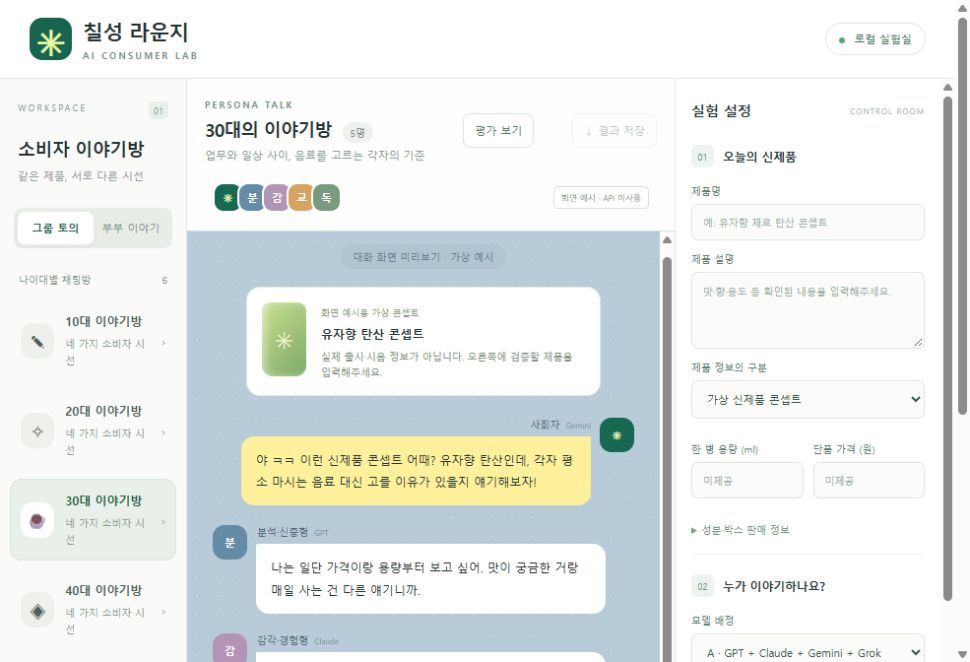

01AI AGENT · CONSUMER SIMULATION대표 프로젝트
칠성 라운지
출시 전에, 구매를 망설이는 이유를 찾습니다.
서로 다른 판단 기준을 가진 AI 소비자가 신제품을 평가하고 토의합니다. 독립 평가와 의견 교환, 사람의 검토를 하나의 실험 흐름으로 설계했습니다.
실제 실행 기록B · GPT / 40대 이야기방
당류를 확인한 뒤, 혹은 우선 한 번 마셔보고.
다른 구매 조건이 드러나는 대화.
HO-SEON KIM / PORTFOLIO 2026
사람의 맥락을 이해하고, AI의 판단을 설계합니다.
아이디어를 직접 써볼 수 있는 서비스로 만드는 김호선입니다.

같은 음료,
서로 다른 구매의 이유.
01 / SELECTED WORK
소비자의 선택부터 매일의 학습까지.
각기 다른 문제를 데이터와 AI, 화면으로 연결했습니다.
출시 전에, 구매를 망설이는 이유를 찾습니다.
서로 다른 판단 기준을 가진 AI 소비자가 신제품을 평가하고 토의합니다. 독립 평가와 의견 교환, 사람의 검토를 하나의 실험 흐름으로 설계했습니다.
당류를 확인한 뒤, 혹은 우선 한 번 마셔보고.
다른 구매 조건이 드러나는 대화.
개념을 읽고, 한 문제로 확인하고, 다시 복습하는 학습 앱. 원문·공식 정답·AI 해설을 구분해 학습 자료의 근거를 관리합니다.
개념 → 문제 → 이해 확인 → 복습의 흐름을 구성했습니다. 학습 진도를 저장하고, 해설의 출처와 검토 상태·자료 버전을 구분해 업데이트할 수 있도록 했습니다.
이름과 음성의 특징을 색채와 형태로 표현하는 모바일 앱. 생성한 작품을 감상하고 저장하는 경험을 Android 기기 기능까지 연결했습니다.
입력 특징을 시각 요소로 바꾸는 규칙과 작품 생성 화면을 구성했습니다. 저장·배경화면·영상 기능을 연결하고 Android 디버그 빌드로 기기 화면을 확인했습니다.
지역의 상황과,
필요한 지원을 함께 봅니다.
강수·수위·침수 이력과 봉사 정보를 연결한 재난 복구 지원 관제 프로토타입입니다. 현황과 지원 정보를 한 화면에서 살펴볼 수 있도록 구성했습니다.
공공 데이터의 지역·시간 맥락을 맞춰 지도와 지표로 표현했습니다. 화면은 시나리오 재생 기록이며 실제 재난 현장의 운영 성과를 의미하지 않습니다.
ALSO BUILT / RECOMMENDATION
장르 유사도 기반 추천에 TMDB와 FastAPI를 연결한 영화 탐색 서비스입니다.
02 / HOW I THINK & BUILD
AI 도구와 협업하며 요구사항과 판단 기준을 정하고,
생성된 코드와 결과를 검토해 서비스로 연결합니다.
UNDERSTAND THE CONTEXT
민속사관학교의 인물 배경·가치관·행동 동기를 설계한 경험을 소비자 페르소나의 우선순위와 설득 조건에 적용합니다.
CONNECT THE EVIDENCE
PDF 전처리, 청크 분할, 임베딩과 ChromaDB·BM25 검색을 연결한 RAG 파이프라인을 구현하고 검색 조건별 결과를 비교합니다.
KEEP PEOPLE IN CONTROL
호출 한도, 도구 인자와 응답 상태를 확인하고 필요한 시점에 멈춥니다. 사람의 수정과 실행 기록이 다음 판단으로 이어지게 합니다.